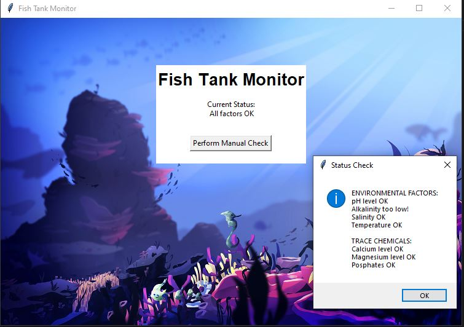
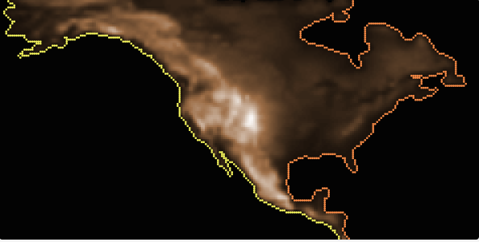
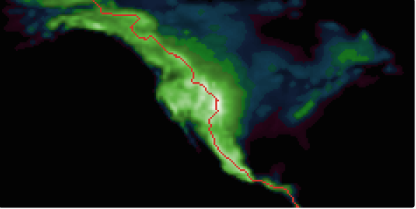

we created a game where you had to navigate the rocket and avoid the asteroids. the rocket was moved by using the wasd keys and upon reaching the planet on the other side, you would get a sweet winning message!
1.2.5 project
we created a game where two turtles have to race against each other. one is controlled with arrows, the other with wasd. the goal is to make it to the end before the time runs out or risk having a draw
scratch project
the player must move the owl around to collect coins while avoiding the hedgehog. the player has thirty seconds to get the most points possible
2.1.6 project

we had to debug a code related to a fish tank and figure out what was wrong with it. we had to modify chemical levels and the outputs given
4.1.4 project


we had to research a simulation and take notes on it. we chose a simulation on erosion and water levels. we took various notes on the factors of randomness, erosion, and water rising rates